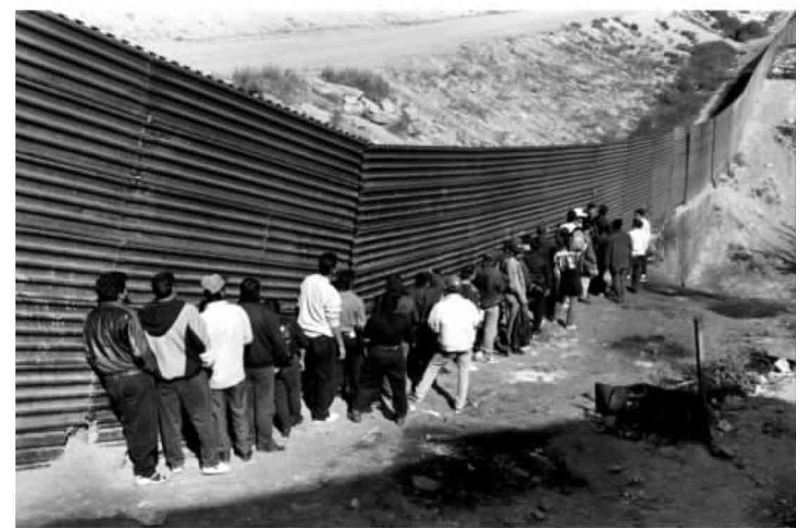
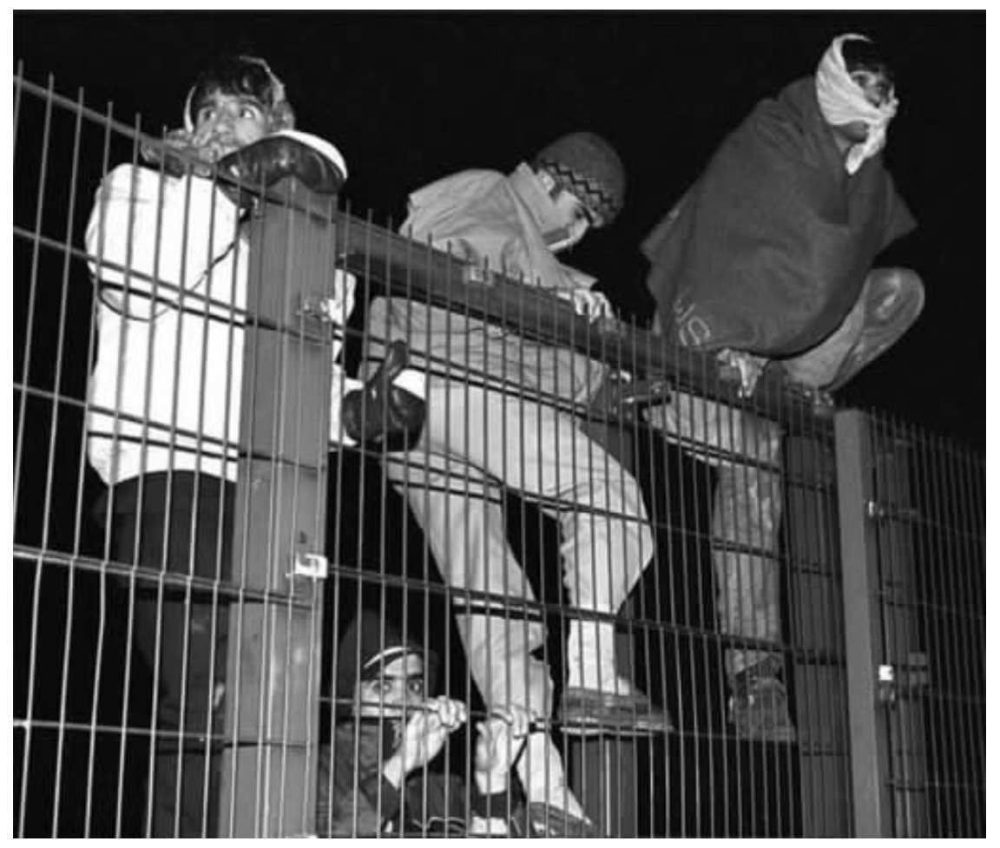
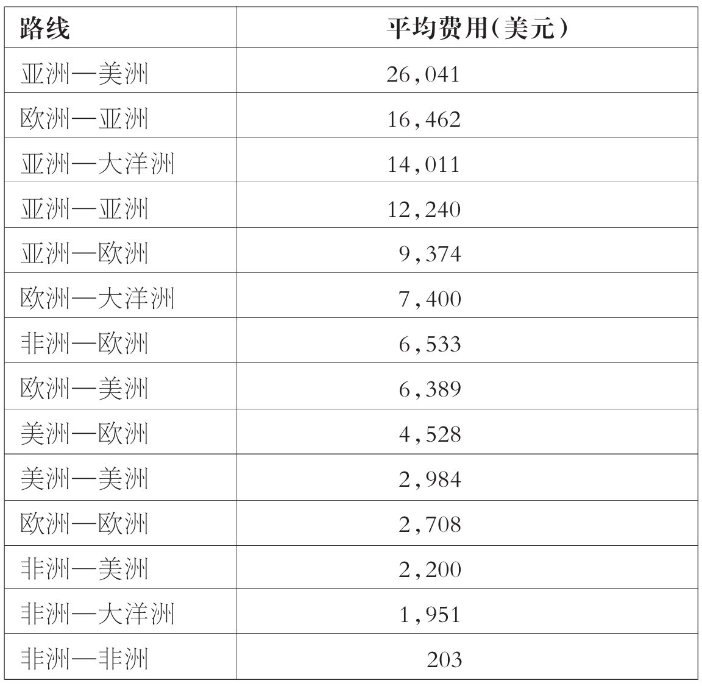

以非常规方式离开本国的移民与其他移民有着完全相同的动机。以非常规方式而非合法方式移民的人数量之所以增长，大多是因为针对合法移民活动的限制越来越多，这种限制主要是来自那些目的地国。想要移民的人数量空前，但相对而言，能让他们如愿以偿的机会却并不多。我们将在本章看到，围绕着人们不顾法律限制也要移民的愿望，一个数十亿美元的产业发展了起来，其形式为人口贩卖和移民偷渡。
何为非常规移民
本章中时常用到的另有两词，即“无证明文件”和“未经批准”。在此，不用前者是因为该词含糊不清。该词有时被用来指那些没有记录在册（或未登记）的移民，而有时又被用来指那些没有所需文件（如护照或工作许可证）的移民。再有就是，两种情况都并不一定适用于所有的非常规移民——很多人官方并不是不知道，也有很多人还是有所需文件的，但“无证明文件”一词还是将他们全都囊括了进去。同样，并非所有的非常规移民都“未经批准”，因此这个词的使用也往往不够准确。非常规移民这个词有点蹩脚，但我认为，在可供选择的常用词中它当为首选。

图6 墨西哥蒂华纳美国边境隔离墙外的移民
非常规移民本身就是一个复杂而又内涵丰富的概念，需要仔细弄清楚。首先，应当认识到移民变成“非常规”移民的方式多种多样。未经所需批准、未经边境检查或以伪造文件入境他国的人都属于非常规移民。非常规移民也包括入境完全合法，但随后便不顾限期逾期滞留的人，比如签证或工作许可证到期后仍然滞留，或者通过假结婚、假收养、假的学生身份或者假自主经营者的身份等方式滞留的人。该词也包括由蛇头或贩卖人口者组织迁移的人以及那些蓄意滥用庇护体制的人。
何为非常规移民
2001年，在英国多佛港一辆卡车后厢中发现了五十八名中国人的尸体。在英国广播公司（BBC）一条不超过一分钟的报道中，他们被说成是“非法移民”和“经济移民”。唯一确定的是，这些人是非法进入英国的，未接受边境官方检查——因此，比起“非法”一词，或许“非常规”的说法更为可取。在第二章我们看到，经济移民是离开祖国寻求工作的人。很不幸，他们均已死亡，没有人知道他们为何离开中国。也许是为了工作，也许是为了逃离。然而即便是为了后者，由于没有一个人递交庇护申请，所以严格说来，他们都不是寻求庇护者；而且可以肯定的是，他们都没有获得难民身份。
第二，非常规移民这个概念在使用方式上带有很大的地区差异。比如说在欧洲，由欧盟（EU）以外入境的人员受到严密检查，这样一来，要定义和甄别具有非常规身份的移民就相对简单一些。在非洲很多地方情况并非如此，那里的边境漏洞百出，种族群体和语族群体常常跨越国界，有些人属于游牧社区，很多人无法提供自己的出生地证明或国籍证明。
最后一个麻烦在于，正如我们在第二章谈到的那样，移民的身份是会变化的，而且常常真的是发生在一夜之间。移民以非常规的方式进入一个国家，但随即使自己的身份常规化，如通过申请庇护或加入一项常规化计划。相反，正常入境的移民在其未持工作许可证工作或签证到期仍然滞留时也会成为非常规移民。比如，澳大利亚有大量非常规移民都是英国公民——往往是那些签证到期仍不离开，享受“空档年” [4] 的学生。寻求庇护者在申请不获准而又未经许可继续滞留时也会成为非常规移民。更为普遍的是，不辞劳苦长途旅行，从地球一角到另外一角，穿越数个国家而最终到达目的地的国际移民比例日渐加大。在单次行程当中，根据相关国家的签证要求，移民的身份很可能时而算作常规时而又算作非常规。
非常规移民知多少
由于严重缺乏准确数据，对于非常规移民的分析越发受阻，从而使辨别趋势或比较世界各地移民现象的规模难以进行。有一个原因是概念上的，我们已经看到，该词涵盖了所有因为不同原因处于非常规状态的人以及可能会在常规与非常规两种状态之间转换的人。
还有一个原因是方法上的。至少可以说非常规移民的统计是一门不精确的科学。没有常规身份的人担心被识破，会避开与官方交谈，从而不会被记录在案。大多数观察家认为大部分非常规移民均未记录在案。估算非常规移民数量的方法多种多样，但需要强调的是，这其中没有一种能够面面俱到。有些国家会定期宣布大赦，从而使未经合法许可在那里居住或工作的异国国民的身份得以常规化。已经对非常规移民进行过直接调查，尽管调查他们并不容易。比较不同的移民数据记录来源以及人口数据有可能会凸显出由非常规移民造成的不一致。最后，对雇员的调查也能间接地发现无合法身份的外国工人。
除了被驱逐出境者，返乡的非常规移民究竟有多少也实在是无法计算。调查表明，想当然地认为所有非常规移民都会永久居留是不对的。许多人来到目的地国心中都有一个具体的，通常是经济方面的目标，比如说，挣够了钱好盖座房子、供孩子读书或者是还债。
不管获取途径多么有限，所得数据的获取途径都算是一个问题。在许多国家，这种数据均由执行机构收集，并非公众所能获取。另外，能够确定某人非常规身份的信息和数据常常分散于不同机构之间，如政府部门、警察部门以及就业部门。数据收集方面的国际合作更是问题多多。有关非常规移民全球趋势及数量的权威数据资料根本就不存在，而可用资料又不全面。
倒是有一个被广泛接受的看法，即随着国际移民数量的增长，非常规移民的全球规模也随之增长。对非常规移民的估算大多是在一国的层面上进行的。比如，据估计，美国国内有超过一千万的非常规移民，几乎占其国外出生人口的三分之一。这些非常规移民中超过一半都是墨西哥人。的确，根据一些估计，美国大约一半的生于墨西哥的人口（将近五百万人）都是非常规移民。尽管边境检查力度已经加大，但每年还是有五十万未经许可入境美国的移民。也有估计说明，俄罗斯有三百五十万到五百万非常规移民，主要是来自独联体（CIS）和东南亚国家。此外，据估计印度现在也有两千万非常规移民，这一数目真是惊人。
另有一些地区或全球范围内的估计。根据经济合作与发展组织（OECD）的估计，2000年欧洲五千六百万移民中至少有五百万，或者说百分之十处于非常规状态，而且每年还会有五十万移民入境。非洲和拉丁美洲的移民大半也被认为是非常规移民。国际移民政策发展中心估计，总体看来，每年未经许可穿越国际边境的移民有二百五十万到四百万之多。不过，所提供的数据也有很大出入，有时不同数据资料之间的偏差会非常明显。
即便我们认为这些数据并不可靠，不可辩驳的是，它们的确意义重大。这些数据所引发的关注显而易见。但是非常规移民还是应当被纳入到其应有的语境当中去看待。在多数国家，非常规移民的政治意义远远大于其数字上的意义。即便依据最极端的估计，非常规移民在全球移民中也仅占不到百分之五十，而在整个欧盟以及欧盟大多数成员国，非常规移民所占比重仅为不到百分之十。英国的例子很能说明问题。对入境英国的非常规移民数量的估计出入很大，但即使是最高估计与英国常规移民相比比重仍然相对较小。比如，每年来英国求学的留学生就有十二万，此外合法入境在英国工作的人也有二十万。
分清“已有移民”和“流入移民”也很重要。对于已有非常规移民的估计少之又少，比如，欧盟成员国没有一个国家就其非常规人口数量发布官方评估。然而毋庸置疑的是，在大多数国家已有移民在数量上远远超过流入移民。全球大多数非常规移民已经在目的地国居留有时。这些人往往已经有活儿可干，有地方可住，甚至孩子也已经入学。换句话说，他们在自己所生活的社会中已经是不可或缺的一分子了。
非常规移民的挑战
在政治和媒体话语中，非常规移民常被说成是对国家主权的威胁。简单说来，这种看法认为国家享有对入境人员进行控制的主权，而非常规移民破坏了这种控制，从而也就威胁到了主权。由此看来，要维护主权，杜绝非常规移民当为根本举措。在一些更为极端的话语中，非常规移民还被视作对国家安全的一种威胁。据透露，非常规移民和寻求庇护者尤其可能会为潜在的恐怖分子入境大开方便之门。考虑到当前讨论的敏感性，对这些潜在的、煽动性的结论应当作出极为缜密的分析。
首要问题是要考量所涉及的数量。非常规移民威胁国家主权这一看法中所固有的认识是，非常规移民数量巨大，“泛滥成灾”，各国已经难以承受或至少也是有此隐忧。实际上，正如我已经解释过的那样，非常规移民虽然数量巨大，但在大多数国家的移民总数中只占较小比重。
其次，非常规移民常常被别有用心地加以指摘，而这样的指摘却又没有任何实质性的依据。尤为常见的两个想当然的认识是：非常规移民参与非法活动；他们与传染病的传播有关，尤其是艾滋病。这两种认识都纯粹是以偏概全。有些非常规移民（及寻求庇护者）是罪犯，有些在长期迁徙中染上传染病，但大部分人并非如此。对证据的歪曲将所有非常规移民视为了罪犯并把他们妖魔化了。这促使他们只好隐藏在地下，同时也转移了人们的注意力，使人们无视那些的确就是罪犯并应受到指控的非常规移民以及那些染上疾病需接受治疗的非常规移民。
单单将注意力放在恐怖主义上面意味着其他与非常规移民相关的，国家、社会以及移民本身所面临的紧迫的挑战往往会被忽视。非常规移民是会对国家安全造成威胁，但通常却并不是因为它与恐怖主义或者暴力相联系。当与腐败、有组织犯罪相联系时，非常规移民就会成为公共安全的一大威胁。在蛇头和人口贩卖者可以为非法入境大开方便之门，或犯罪团伙在移民入境后争夺移民劳动力控制权的地方尤其如此。
当非常规移民的涌入导致僧多粥少，引发竞争时，侨居国的人口中便会萌生排外情绪。值得注意的是，这种情绪往往除了直接针对非常规移民，也会殃及已有移民、难民和少数民族族群。当这种情况得到大量媒体关注时，公众对国家移民政策和庇护政策的合理性和有效性的信心也会因为非常规移民的问题而大打折扣。非常规移民从而会影响政府扩大常规移民渠道的能力。政府应当向国民展示其控制局面的能力，这一点至关重要，不可低估。如果非常规移民的现象的确存在，投票人关于为何还要接纳移民的质问就并非没有道理。
那么这就很清楚了，尽管关系复杂，但非常规移民的确会危及国家安全。不过，非常规移民同样也会危及移民本人的人身安全。非常规的移民活动对移民自身的消极影响经常被低估。他们经常会因此搭上性命。每年都有大量试图越过陆上或海上边境的人死于非命而未被官方发现。比如，据估计，每年试图越过地中海从非洲到欧洲的移民中都有两千人丧生，越境到美国的墨西哥移民则约有四百人丧生。

图7 移民翻越法国北部弗雷桑火车站的护栏企图登上一列经英法海峡海底隧道开往英国的货运火车
国际移民问题中最大的未知因素就是究竟有多少人离开故土却没能抵达他们想要去的地方，他们在过境国过的又是怎样的生活。
在为数众多的非常规身份移民中，女性占了不小的比例。因为面临性别歧视，非常规身份的女性移民往往被迫接受最卑贱、最不正式的活儿。她们的人权饱受侵犯，因此有些评论家甚至将当代的人口贩卖与奴隶交易相提并论。女性尤其会面临某些健康方面的风险，包括接触艾滋病病毒。更为普遍的是，未获许可入境某国或在某国居住的人往往冒着被雇主和房东剥削的风险。因为身份特殊，这类移民一旦到达目的地国，技能和经验通常难以完全发挥。
非常规移民通常不愿寻求官方救助，因为他们怕被逮捕或驱逐出境。因此，他们并不一定就会使用他们可以享有的公共服务，比如紧急救护。在大多数国家，他们只能部分使用公民和常规移民享有的整套服务。在这种情况下，本就不堪重负的非政府组织、宗教团体及其他的民间团体机构不得不向非常规移民提供援助，有时甚至要牺牲自身的合法性。
非常规移民是一个极易引起激烈讨论的话题，而且所引发的观点往往走向极端。关注边境检查和国家安全的人往往遭到那些关注移民人权的人的反对。另外一个挑战是如何就非法移民的成因和后果以及解决这一问题最为有效的途径促使人们进行客观的讨论。
人口贩卖与移民偷渡
人口贩卖与移民偷渡在全球非常规移民中所占比例或许相对较小，但近期以来备受关注，因此有必要用本章余下篇幅对其加以讨论。简而言之，本章回答了四个问题：什么是人口贩卖与移民偷渡？规模如何？代价有哪些？对移民本人有什么影响？
尽管人口贩卖和移民偷渡常被混淆，甚至连政策制定者和学者也不例外，但是这两个概念在法律上还是有区别的。《联合国关于禁止、打击和惩罚贩卖人口的决议》（1999）中对贩卖人口作了如下定义：
贩卖女性，有时候甚至是女童，使其成为妓女或从事性交易的行为已经引起了相当关注。要调查人口贩卖很难，但根据国际移民组织的调查，常见的情况是，年轻女性被许诺可以在国外工作。事先商量好价钱，这位女性就会在开始工作之后分期还钱。她随即被运送到目的地国（往往是以非法的形式），到了那里，她才明白自己要被迫做妓女，而且几乎所有收入都被人贩子拿走。也有一些关于年轻女性和儿童遭人绑架，被人从家里带走并强行运到其他地方的报道。有些人真就是将人口贩卖描述成现代版的奴隶制。
移民偷渡的定义如下：“为了直接或间接的经济利益或其他物质利益，使某人非法入境某国，而在该国，此人既非国民也不是永久性居民。”与人口贩卖不同，移民偷渡大多是出于自愿。潜在移民本人，或者往往是其家人付给蛇头一笔钱将其非法运送到目的地国。到达目的地后他们与蛇头的瓜葛一般也就随即终止，因此他们不会像人口贩卖的受害者一样面对由之而来的剥削。
实际上人口贩卖与移民偷渡之间的界限也会模糊不清。如果移民前移民未向蛇头付钱，这就意味着到达目的地国时移民还要向蛇头还债。在这种情况下，人口贩卖与移民偷渡之间的界限就会变得尤其模糊。这就有可能导致剥削。
同非常规移民的总体情况一样，要精确计算人口贩卖或移民偷渡的数量根本不可能。所提供的数字通常只是就一部分人所做的统计，他们要么是偷渡行为或被人贩卖的事情被发现，要么就是自己作了交代。问题是，没有人知道实际发现的被贩卖和偷渡的移民究竟占多大比例。似乎有理由认为，这类移民中有很多人永远都不会为官方所知。
事实上，美国国务院确有发布关于人口贩卖的年度评估的做法。根据这些估计，仅2004年一年就有六十万到八十万的女性、儿童以及男性被贩卖。所发布的统计数据中令人震惊的一点是，世界各地均有贩卖人口的现象，而且发生在区域内部的比发生在区域之间的往往更为常见。据估计，三分之二的受害者分布于亚洲内部（二十六万到二十八万）及欧洲内部（十七万到二十一万）。
我最近参与了伦敦大学学院移民调查小组的某项调查。该调查试图估算世界各地移民偷渡的费用。调查对含有移民付费情况的六百多份资料做了考察。当然，这项调查难免会有不少问题，其结果也无非只是些估计，但从中却还是可以读出一些耐人寻味的东西（表5.1）。
表5.1 移民偷渡费用一览表

为了此处的讨论，表5.1中的数据有三点需要说明。第一点，要注意蛇头和人贩子究竟能收取多少费用。据显示，从亚洲到美洲的旅程平均费用超过两万六千美元。其中隐含的一层意思就是，只有那些相对比较富有的人才付得起钱偷渡，而这一趋势越来越明显。两万六千美元在诸如巴基斯坦这样的国家可不是一笔小数目，而亚洲与美洲之间的移民事件很多都源于巴基斯坦。
第二点，要看到偷渡费用差别巨大。表格最下方显示的非洲内部越境偷渡的费用低到只有二百零三美元，考虑到第三章对这些国家收入水平的描述，这可能也算一大笔钱了。在所报道的几则案例中，非洲国家之间的偷渡不是现金付费，而是用几袋大米以及别的什么东西支付。表中可以获得的最后一条信息再次说明移民偷渡是全球现象，并非只是由“南”向“北”的流动过程。
通过考察几年间移民偷渡费用的报告，该调查也试图弄清费用是在上涨还是在下降。尽管主要路线的费用各有不同，但整体感觉是费用正在逐渐下降。这似乎是因为偷渡这个行当的竞争日益加剧，蛇头总是得互相压价并调整策略以吸引更多的“客户”。
偷渡费用调查的最后一个方面是试图搞清楚这些费用的主要决定因素是什么。我们理清了三个主要因素：一是行程，大致上行程越长费用越高；二是交通方式，乘飞机比乘船贵，而乘船又比坐车贵；第三个因素大概就是出行人数，同一批出行人数越多，人均费用就显得越少。
顾名思义，人口贩卖对于被贩卖的人会有消极影响。人贩子无情地剥削移民。人口贩卖的受害者对于自己所要从事的活动没有自由决定的权利。他们常常被迫做一些钱少、不安全而且卑下的工作，发现自己根本无计逃脱，所得酬劳又少得可怜甚或就干脆没有。贩卖女性近来已经得到了很大关注，但也应该看到贩卖人口的活动也同样影响着男性和儿童。既不是常规移民，又远离父母，移民儿童成为特别容易受伤害的群体，他们有可能会被贩卖进入性行业。
作为一项产业的移民偷渡
但同样重要的是，移民偷渡对身陷其中的人的消极影响也不可忽视。我们已经看到，为了让他们从一地偷渡到另一地，蛇头会向他们收取上万美元的费用。蛇头们并不一定会提前告知移民他们到达的确切地点。他们采用的运输方式往往并不安全，以这种方式旅行的移民可能会发现蛇头对他们撒手不管，从而无法完成他们已经付了钱的行程。通过蛇头偷渡期间，许多移民在海上溺水而死，在密封的集装箱里窒息而死，或在途中被强奸或虐待。
苏莱曼的遭遇，2003年采访于喀布尔